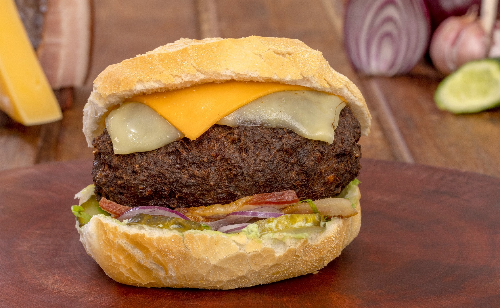

.png)
Conheça um um pouco mais sobre o PinhãoO pinhão é um verdadeiro tesouro da gastronomia curitibana, extraído da semente da araucária, árvore símbolo da região. Com seu sabor levemente adocicado e textura macia, o pinhão é um ingrediente versátil que pode ser preparado de diversas formas: cozido, assado ou até mesmo em receitas mais elaboradas como farofas e sopas. Durante a temporada de inverno, é comum ver quiosques e feiras vendendo pinhão quente, ideal para aquecer o corpo e o coração. Venha experimentar essa delícia que é parte essencial da cultura paranaense e descubra por que o pinhão é um prato amado por todos! |
|---|
Conheça a Carne de OnçaA carne de onça é uma iguaria típica da culinária paranaense que desperta a curiosidade e o paladar dos amantes da boa comida. Este prato, que consiste em um tartar de carne crua temperado com cebola, pimenta e especiarias, é servido com torradas crocantes. A carne de onça é uma escolha perfeita para quem busca algo autêntico e ousado. É um prato ideal para compartilhar com amigos, acompanhado de uma boa bebida. Venha descobrir o sabor intrigante da carne de onça e mergulhe na tradição culinária de Curitiba! |
|---|
|  |
Conhça o Pão com BolinhoO pão com bolinho é um clássico da culinária curitibana, uma verdadeira paixão local que combina sabor e tradição. Esta delícia consiste em um bolinho frito de carne, que é servido dentro de um pão, muitas vezes acompanhado de molhos saborosos. Simples, mas irresistível, o pão com bolinho é perfeito para um lanche rápido ou como uma opção deliciosa para compartilhar com os amigos. Ao visitar Curitiba, não perca a chance de experimentar esse quitute que representa a essência da hospitalidade e da gastronomia local! |
|---|